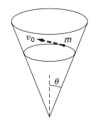

C2.2 Problems#
Problem C2.1
A fairground ride spins its occupants inside a flying saucer-shaped container. If the horizontal circular path the riders follow has an 8.00 m radius, at how many revolutions per minute are the riders subjected to a centripetal acceleration equal to that of gravity?
This problem is a slightly modified version from OpenStax. Access for free
# DIY Cell
Show code cell source
%reset -f
import sympy as sym
import numpy as np
a = -9.81
R = 8.00
#unknown variable: omega (angular speed)
w = sym.Symbol('w')
#equation to be solved: a = -rw^2 --> 0 = a + Rw^2
eq1 = a + R*w**2
sol1 = sym.solve(eq1,w)
print('Angular velocity in rad/s = '+str(sol1[1]))
w_rad = sol1[1]
w_rev = w_rad*(1.0/(2*np.pi))*(60.0/1)
print('Angular velocity in rev/min = '+str(w_rev))
Show code cell output
Angular velocity in rad/s = 1.10736172951751
Angular velocity in rev/min = 10.5745255826101
Problem C2.2
What is the ideal banking angle for a gentle turn of 1.20-km radius on a highway with a 105 km/h speed limit (about 65 mi/h), assuming everyone travels at the limit?
This problem is a slightly modified version from OpenStax. Access for free
# DIY Cell
Show code cell source
%reset -f
import sympy as sym
import numpy as np
v = 105.0
g = 9.81
R = 1.20E3 #in meters
#convert speed from km/hr to m/s
v = v*(1000.0/1.0)*(1.0/3600.0)
#unknown variables
theta = sym.Symbol('theta') #banking angle
fn = sym.Symbol('fn') #normal force
m = sym.Symbol('m') #mass
#horizontal normal force provides the force for centripetal acceleration
#vertical normal force is balanced by force of gravity
eq1 = fn*sym.cos(theta) - m*g
eq2 = -m*(v**2)/R + fn*sym.sin(theta)
sol = sym.solve((eq1,eq2),(theta,fn))
print('Ideal banking angle in degrees: '+str(sol[0][0]*180.0/np.pi))
Show code cell output
Ideal banking angle in degrees: 4.13325026089175
Problem C2.3
If a car takes a banked curve at less than the ideal speed, friction is needed to keep it from sliding toward the inside of the curve (a problem on icy mountain roads).
Calculate the ideal speed to take a 100.0 m radius curve banked at 15.0\(^\circ\).
What is the minimum coefficient of friction needed for a frightened driver to take the same curve at 20.0 km/h?
This problem is a slightly modified version from OpenStax. Access for free
# DIY Cell
Show code cell source
%reset -f
import sympy as sym
import numpy as np
# PART 1
#-------------------------
# no friction
g = 9.81
R = 1.00E2 #in meters
theta = 15.0*np.pi/180.0 #converted to radians
#unknown variables
v = sym.Symbol('v') #speed
fn = sym.Symbol('fn') #normal force
m = sym.Symbol('m') #mass
#horizontal forces provides the force for centripetal acceleration
#vertical normal force is balanced by force of gravity
eq1 = fn*sym.cos(theta) - m*g
eq2 = -m*(v**2)/R + fn*sym.sin(theta)
sol = sym.solve((eq1,eq2),(v,fn))
print('Ideal speed in m/s: '+str(sol[1][0]))
print('Ideal speed in km/hr: '+str(sol[1][0]*3600.0/1000.))
#---------------------------
# PART 1
#-------------------------
#with friction
g = 9.81
R = 1.00E2 #in meters
theta = 15.0*np.pi/180.0 #converted to radians
v = 20.0 #km/hr
v = 20.0*(1000.0/1.0)*(1.0/3600.0) #m/s
#unknown variables
mu = sym.Symbol('mu') #coefficient of friction
fn = sym.Symbol('fn') #normal force
ff = sym.Symbol('ff') #friction force
m = sym.Symbol('m') #mass
#horizontal forces provides the force for centripetal acceleration
#vertical forces are balanced
eq1 = fn*sym.cos(theta) - m*g + ff*sym.sin(theta)
eq2 = -m*(v**2)/R + fn*sym.sin(theta) - ff*sym.cos(theta)
eq3 = ff - fn*mu
sol = sym.solve((eq1,eq2,eq3),(v,fn,ff,mu))
print('Coefficient of friction: '+str(sol[0][3]))
#---------------------------
Show code cell output
Ideal speed in m/s: 16.2129009672832
Ideal speed in km/hr: 58.3664434822194
Coefficient of friction: 0.234510246558863
Problem C2.4
A car rounds an unbanked curve of radius 65 m. If the coefficient of static friction between the road and car is 0.70, what is the maximum speed at which the car can traverse the curve without slipping?
This problem is a slightly modified version from OpenStax. Access for free
# DIY Cell
Show code cell source
%reset -f
import sympy as sym
import numpy as np
g = 9.81
R = 65.0
mu = 0.70
#unknown variables
v = sym.Symbol('v') #speed
fn = sym.Symbol('fn') #normal force
ff = sym.Symbol('ff') #friction force
m = sym.Symbol('m') #mass
#horizontal frictional force provides the force for centripetal acceleration
#vertical forces are balanced
eq1 = fn - m*g
eq2 = -m*(v**2)/R + ff
eq3 = ff - fn*mu
sol = sym.solve((eq1,eq2,eq3),(v,fn,ff))
print('Speed: '+str(sol[1][0]))
#---------------------------
Show code cell output
Speed: 21.1271152787123
Problem C2.5
A particle of mass \(m\) slides without friction on the inside of a cone. The axis of the cone is vertical, and gravity is directed downward. The apex half-angle of the cone is \(\theta\), as shown. The path of the particle happens to be a circle in a horizontal plane. The speed of the particle is \(v_0\). Draw a force diagram and find the radius of the circular path in terms of \(v_0\), \(g\), and \(\theta\).
This is Problem 2.6 in Kleppner and Kolenkow.
# DIY Cell
Problem C2.6
Find the radius of the orbit of a synchronous satellite that circles the Earth. (A synchronous satellite goes around the Earth once every 24 h, so that its position appears stationary with respect to a ground station.) The simplest way to find the answer and give your results is by expressing all distances in terms of the Earth’s radius \(R_e\).
This is Problem 3.4 in Kleppner and Kolenkow.
# DIY Cell
Problem C2.7
A mass \(m\) is connected to a vertical revolving axle by two strings of length \(l\), each making an angle of \(45^\circ\) with the axle, as shown. Both the axle and mass are revolving with angular velocity \(\omega\). Gravity is directed downward.
Draw a clear force diagram for \(m\).
Find the tension in the upper string, \(T_{up}\), and lower string, \(T_{low}\).
This is Problem 3.5 in Kleppner and Kolenkow.
# DIY Cell
Problem C2.8
The gravitational force on a body located at distance \(R\) from the center of a uniform spherical mass is due solely to the mass lying at distance \(r \le R\), measured from the center of the sphere. This mass exerts a force as if it were a point mass at the origin. Use this to show that if you drill a hole through the Earth and then fall in, you will execute simple harmonic motion about the Earth’s center. Find the time it takes you to return to your point of departure and show that this is the time needed for a satellite to circle the Earth in a low orbit with \(r \sim R_e\). In deriving this result, treat the Earth as a uniformly dense sphere, neglect friction, and neglect any effects due to the Earth’s rotation.
This is Problem 3.15 in Kleppner and Kolenkow.
# DIY Cell
Problem C2.9
A mass \(m\) whirls around on a string which passes through a ring, as shown. Neglect gravity. Initially the mass is distance \(r_0\) from the center and is revolving at angular velocity \(\omega_0\). The string is pulled with constant velocity \(V\) starting at \(t = 0\) so that the radial distance to the mass decreases.
Draw a force diagram and obtain a differential equation for \(\omega\). This equation is quite simple and can be solved either by inspection or by formal integration.
Find \(\omega(t)\)
Find the force needed to pull the string.
This is Problem 3.22 in Kleppner and Kolenkow.
# DIY Cell